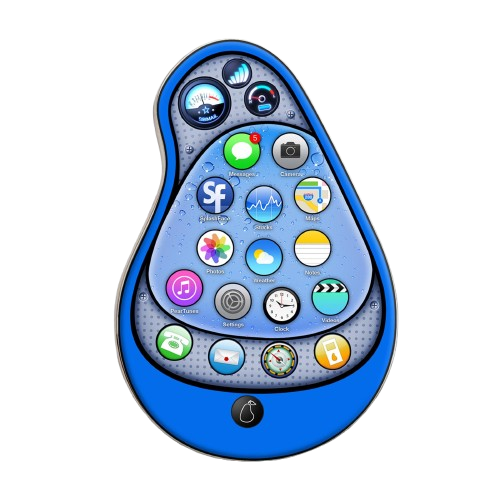
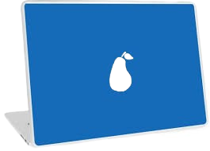
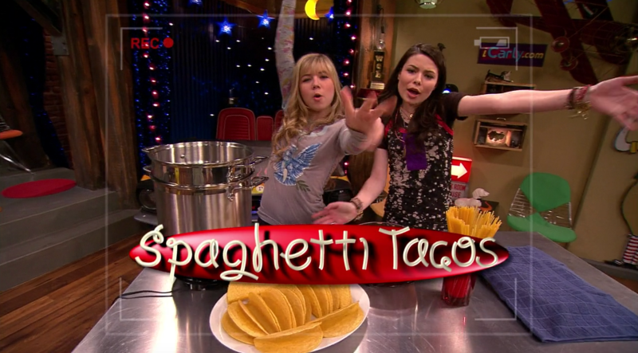
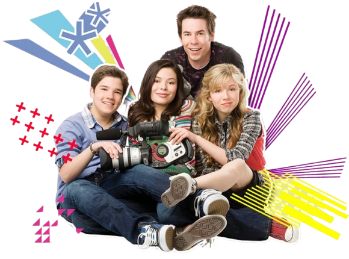

History
The Pear Company was established in the early 2000s within the iCarly universe, becoming popular among the youth demographic.
Key Milestones
- The first appearance was in the episode "iPilot" showcasing its influence on the characters' lives.
- The company has been involved in various plots, often serving as a source of conflict or comedic relief.
Notable Episodes:
"iPear", where Carly and Sam discover new features of the Pear Phone.
"iGo to Japan", which features a product launch event in Japan.
Competitors
The Pear Company often finds it self in a rivaly with other fictional tech brands like the "Pudding Company" or "Banana Corporation".
Introduction of Pear Company
The Pear Company is a fictional technology company featured in the iCarly series by Dan Schneider.
For it's innovative product and comedic portrayal, the Pear Company represents a satirical take on real tech giants like Apple and Google.
The main goal of the company is to create user-friendly tech gadgets that cater to the whims of teenagers and young adults, often with exaggerated that leads to humorous situations.
Tagline:"We're the Pear-fect choice for all your tech needs!"
Products
iPear
A smartphoone with quirky feature like voice-activated commands and a "Scream App".
Key Feature: Customizable Pear-themed emojis and wallpaper.
pearPhone.launch();

PearBooks
PearBooks are some of the most seen PearProducts, tied for second with PearPad.
Key Feature: The Special Blue is a special edition where your portion of your purchase is donated to a special cause.
Marketing Strategy
The Pear Company uses humorous adverstising to engage its target users.
Commericals are often absurb and over-the-top, reflecting the company;s playful nature.
Influencer Collaborations Pear products are frequently promoted by characters in the show, driving home the brand's connection with younger generations.
Fanbase The compant has significantly impacted online presence, including social media accounts that share fictional product updates and user-generated content.
Fun Facts
Apple sued the brand in real life that used a pear logo. However, the Pear Company for iCarly is protected due to being considered as satire and not being a real company.
Legacy
The Pear company remain a beloved element of iCarly and often referenced in discussions about the show.
It's products and culture have been integrated into fan discussions, forums and social media.
The comedic portrayal of tech companies in iCarly has inspired other series to create their own fictional brands.
The company continues to appear om iCarly reboots and related media, maintaining its status in the franchise.
console.("Fans love the Pear Company!");